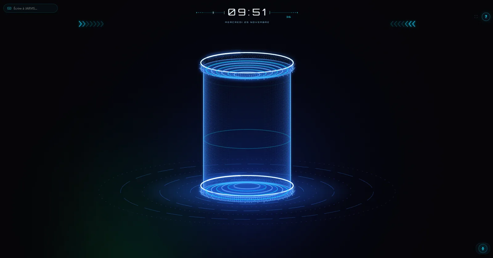

Voix
Mot d'éveil « Jarvis », transcription locale sur le GPU (faster-whisper) avec repli sur Groq puis Google, réponses vocales qu'on peut interrompre.
Fiche projet
Un assistant vocal personnel qui tourne sur ta machine : reconnaissance vocale, biométrie, interface 3D et domotique, en français ou en anglais.
01 — Principe
J.A.R.V.I.S écoute en continu, reconnaît son nom puis exécute la commande : répondre avec une IA, piloter la maison, contrôler le PC ou générer des documents. Le backend Python dialogue par WebSocket avec une interface 3D écrite en TypeScript et Three.js.
Il peut aussi fonctionner entièrement hors ligne avec un modèle local (Ollama).

02 — Fonctionnalités
Mot d'éveil « Jarvis », transcription locale sur le GPU (faster-whisper) avec repli sur Groq puis Google, réponses vocales qu'on peut interrompre.
Gemini en principal, bascule automatique vers Groq, Claude, Mistral, Grok ou Ollama en local selon la disponibilité.
Reconnaît qui parle grâce à son empreinte vocale (CAM++, sherpa-onnx) et adapte les droits : invité ou utilisateur authentifié.
HUD Three.js autour d'un cylindre holographique : widgets, panneaux, palette de 272 commandes (Ctrl+K) et mode réalité augmentée (MediaPipe).
Home Assistant (lumières, prises, températures), Spotify, Deezer, télévision, applications, fichiers et volume.
Images (FLUX.1), documents Word, PowerPoint, Excel et PDF, agent de navigation web et essaim d'agents qui construit des sites.
Faits mémorisés durablement et mémoire vectorielle (ChromaDB) des conversations passées.
Coffre chiffré déverrouillable à la voix, confirmation obligatoire avant toute action destructrice, compétences générées exécutées en bac à sable.
03 — Technique
04 — Démarrage
Télécharger l'installateur sur la page Téléchargements et le lancer : il n'a pas besoin des droits administrateur.
Au premier lancement, un assistant demande ton nom et une clé d'IA (Gemini est gratuite), vérifie le micro et enregistre ton empreinte vocale.
Dire « Jarvis » suivi de la commande.
Ou lancer depuis les sources (Python 3.12+ et Node.js 18+)
git clone https://github.com/NeyorDEV/J.A.R.V.I.S.git
cd J.A.R.V.I.S
install.bat
start.bat